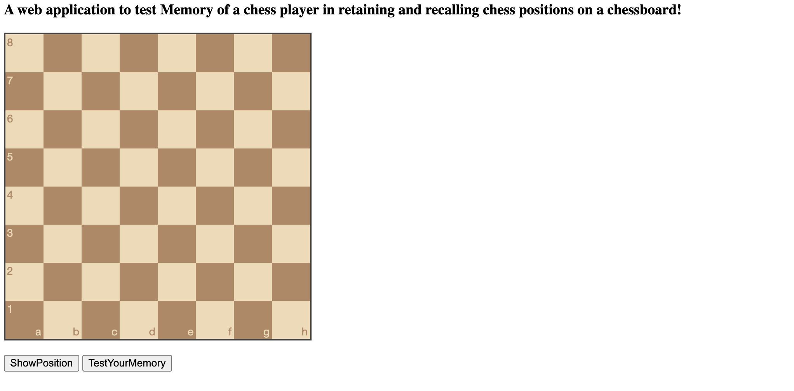
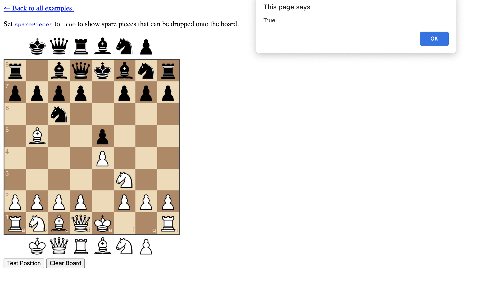

Documentation:
What tools are being used?
1. Chessboard.js To embed ChessBoard for the Application (open-source: https://github.com/oakmac/chessboardjs and https://chessboardjs.com/)
2. Chess.js chess.js is a JavaScript chess library that is used for chess move generation/validation, piece placement/movement, and check/checkmate/stalemate detection - basically everything but the AI.(open-source:https://github.com/jhlywa/chess.js
3. HTML/Java scripting
4. Database (MySQL community edition: Open source)
5.Apache Web server
6. If you want a stack to avoid (4 and 5 steps) – use LAMP https://gist.github.com/claudiainbytes/bea0301cf2cc98beb30266334bf5eaa0
Requirements:
1.OS (windows,linux,mac – any version would do)
2.Browser supporting Java script
3.Apache/mysql servers as part of community edition open-source based
How To Configure ?
1. Copy the repo and load the content through a web sever root directory or you can use static html for tests on your system.
2. Project repo consists of html,css,js,images directories
3. Load the Index.html file to load
Documentation steps:
1. Load the Application (Index.html page) through a browser or standalone.

2.Click the ShowPosition button to load a position. Study this position for few minutes.

3. You will be shown an empty Chess board as shown below. Try to recall the earlier position from your memory and try to get it exactly on the Chessboard

4. If you were able to arrange it correctly, the Application will show the below message else, it will display a false message
